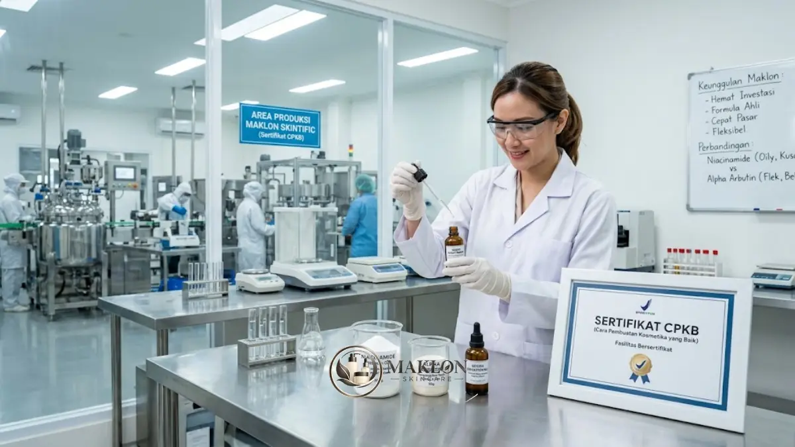
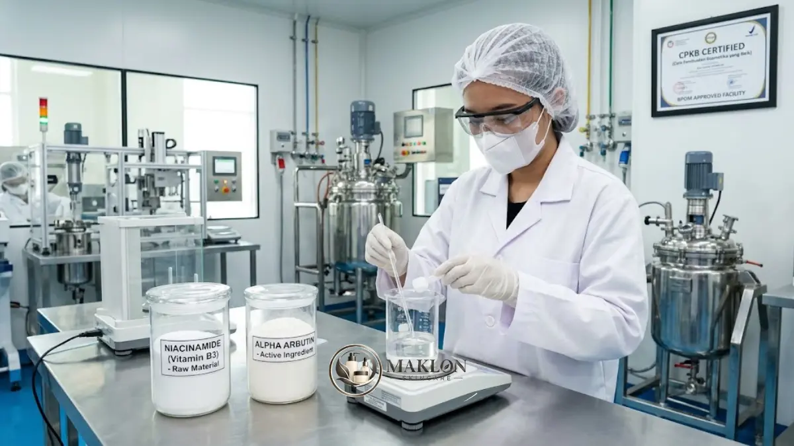

Maklon serum brightening memungkinkan Anda meluncurkan serum pencerah tanpa membangun pabrik, dengan formula yang disusun formulator berpengalaman dan diproduksi di fasilitas bersertifikat CPKB.
- Niacinamide cocok untuk target kulit berminyak dan kusam.
- Alpha Arbutin untuk noda gelap dan bekas jerawat.
- Keduanya bisa dikombinasikan secara harmonis setelah diuji kestabilan sediaannya di laboratorium.
Serum pencerah wajah (brightening serum) adalah salah satu kategori skincare yang paling banyak dicari oleh konsumen di Indonesia.
Iklim tropis dan paparan sinar matahari sepanjang tahun membuat keluhan seperti kulit kusam, hiperpigmentasi flek hitam, dan bekas jerawat menjadi sangat umum.
Bagi pemilik brand, kondisi ini merupakan peluang bisnis yang sangat menjanjikan sekaligus tantangan: bagaimana cara membuat produk serum yang efektif, aman di kulit, dan legal tanpa harus mendirikan fasilitas pabrik sendiri?
Jawabannya adalah memanfaatkan kemitraan bersama penyedia jasa maklon skincare terpercaya.
Artikel ini mengulas secara mendalam keunggulan maklon serum brightening, lalu membandingkan dua bahan aktif pencerah paling populer, yaitu Niacinamide dan Alpha Arbutin.
Apa Itu Maklon Serum Brightening?
Maklon (toll manufacturing) adalah kerja sama produksi di mana brand menentukan konsep, target pasar, dan identitas produk, sedangkan pabrik mengerjakan formulasi, produksi, dan pengemasan.
Dalam proyek maklon serum dan essence brightening, pabrik menyediakan formula siap pakai (ready-to-use) melalui skema ODM atau formula kustom eksklusif melalui skema OEM yang berfokus pada pencerahan warna kulit dan penyamaran noda hitam membandel.
Satu hal yang sangat krusial: berdasarkan kajian ilmiah tata cara sertifikasi CPKB oleh Salsabila dan Husni, setiap perusahaan yang menerima pekerjaan maklon kosmetik wajib memiliki Sertifikat CPKB resmi.
Ketentuan ini berbeda dengan Sertifikasi Pemenuhan Aspek CPKB (SPA CPKB) yang diperuntukkan bagi perusahaan yang memproduksi kosmetik untuk keperluan sendiri.
Oleh karena itu, memeriksa keabsahan sertifikat CPKB pabrik mitra adalah langkah awal yang wajib dilakukan sebelum Anda menandatangani kontrak kerja sama produksi apa pun.
5 Keunggulan Maklon Serum Brightening
Mengembangkan lini produk perawatan wajah melalui jasa maklon memberikan lima keuntungan strategis yang sangat menguntungkan bagi pertumbuhan bisnis brand Anda:
- Investasi awal lebih ringan: Anda tidak perlu mengalokasikan miliaran rupiah untuk membeli mesin homogenizer, menyewa gedung pabrik, atau mendirikan laboratorium steril sendiri.
- Akses ke formulator berpengalaman: Tim riset dan formulasi custom pabrik memahami secara presisi kompatibilitas antar bahan, kestabilan emulsi, dan batas konsentrasi aktif yang aman bagi kulit.
- Produksi di fasilitas berstandar CPKB: Sertifikat CPKB pabrik merupakan prasyarat mutlak yang diwajibkan untuk mengajukan notifikasi kosmetik BPOM dan sertifikasi Halal resmi.
- Waktu peluncuran jauh lebih cepat: Formula dasar yang telah lolos uji stabilitas dapat disesuaikan dengan identitas brand, sehingga produk dapat menjangkau pasar dalam waktu singkat.
- Skala kuantitas produksi fleksibel: Pemilik brand dapat mengawali pesanan dengan jumlah Minimum Order Quantity (MOQ) terjangkau untuk memvalidasi pasar, lalu menaikkan volume produksi saat permintaan konsumen melonjak.

Niacinamide vs Alpha Arbutin: Perbandingan Singkat
Untuk memahami karakteristik kedua bahan aktif pencerah ini secara objektif, berikut ringkasan perbandingannya berdasarkan fungsi, cara kerja, dan profil kecocokan kulit:
| Aspek Pembanding | Niacinamide (Vitamin B3) | Alpha Arbutin |
|---|---|---|
| Fungsi Utama | Mencerahkan kulit, mendukung skin barrier, membantu mengontrol sebum | Menyamarkan hiperpigmentasi, flek hitam, dan noda bekas jerawat |
| Cara Kerja | Menekan transfer melanosom dari melanosit ke keratinosit | Menghambat enzim tirosinase yang berperan dalam pembentukan melanin |
| Rentang Konsentrasi Umum | Sekitar 2% hingga 10% | 1% hingga 2% pada formulasi produk wajah |
| Kecocokan Kulit | Kulit berminyak, rentan berjerawat, kusam, pori besar | Bekas jerawat kehitaman (PIH), flek penuaan, warna tidak merata |
| Catatan Klinis | Pada konsentrasi tinggi sebagian kulit sensitif dapat mengalami kemerahan ringan | Hasil optimal membutuhkan pemakaian teratur secara konsisten selama beberapa minggu |
Niacinamide (Vitamin B3)
Niacinamide dikenal luas di industri kosmetik sebagai bahan multifungsi dengan profil keamanan yang sangat baik.
Studi klinis terkemuka yang sering dijadikan rujukan utama, yaitu penelitian Hakozaki dkk. (2002) dalam British Journal of Dermatology, membuktikan bahwa niacinamide efektif menurunkan pigmentasi wajah secara signifikan dengan cara menekan transfer melanosom dari melanosit ke lapisan keratinosit kulit.
Selain mencerahkan rona wajah kusam, bahan aktif ini juga terbukti klinis memperkuat sawar pelindung kulit (skin barrier) dan meregulasi produksi sebum berlebih.
Karakteristik tersebut menjadikannya pilihan paling ideal bagi segmen konsumen berkulit berminyak dan rawan mengalami komedo maupun jerawat.
Alpha Arbutin
Alpha Arbutin merupakan senyawa turunan glukosida alami dari hidrokuinon yang bekerja langsung menarget enzim tirosinase, sehingga proses sintesis pigmen melanin dapat ditekan.
Penting untuk dicatat bahwa Alpha Arbutin secara kimiawi dan regulasi sangat berbeda dari zat hidrokuinon murni.
Penggunaan hidrokuinon murni dilarang keras dalam produk kosmetik bebas oleh BPOM karena berisiko memicu efek samping okronosis eksogenik.
Sementara itu, komite ilmiah Scientific Committee on Consumer Safety (SCCS) Uni Eropa pada evaluasi resminya menyatakan bahwa Alpha Arbutin aman digunakan hingga konsentrasi 2% pada produk krim dan serum wajah, serta 0,5% pada losion tubuh.
Pastikan pabrik jasa maklon skincare OEM Anda selalu menggunakan bahan baku bersertifikat Certificate of Analysis (CoA) resmi serta patuh pada batas konsentrasi aman BPOM.
Mana yang Lebih Baik untuk Brand Anda?
Tidak ada satu jawaban tunggal yang mutlak untuk semua skenario bisnis.
Keputusan terbaik sangat bergantung pada kejelasan positioning target audiens dan klaim utama produk yang ingin Anda komunikasikan:
- Fokus pada kulit berminyak, berjerawat, dan kusam: jadikan Niacinamide sebagai bahan aktif pahlawan (hero ingredient) utama.
- Fokus mengatasi flek hitam, bekas jerawat, dan hiperpigmentasi: jadikan Alpha Arbutin sebagai kandungan pencerah unggulan.
- Menginginkan jangkauan klaim yang lebih komprehensif: padukan keduanya dalam satu sediaan serum sinergis.
Karena mekanisme kerja keduanya saling melengkapi, penggabungan Niacinamide dan Alpha Arbutin dapat memberikan hasil pencerahan kulit yang optimal.
Namun, formula kombinasi wajib melewati uji stabilitas laboratorium dan uji keamanan dermatologis yang ketat sebelum diedarkan secara massal.
Cara Memilih Pabrik Maklon Serum Brightening
Gunakan daftar periksa teknis berikut saat Anda melakukan audit dan membandingkan beberapa calon mitra pabrik maklon:
- Sertifikat CPKB: Memastikan pabrik memiliki sertifikat CPKB penuh yang masih berlaku aktif untuk bentuk sediaan cairan kosmetik.
- Transparansi formula: Terbuka mengenai daftar komposisi bahan baku (INCI name), kadar konsentrasi zat aktif, dan negara asal pemasok bahan baku.
- Fasilitas uji laboratorium: Menyediakan data uji stabilitas sediaan, uji efektivitas pengawet, dan uji cemaran mikroba.
- Dukungan regulasi tertulis: Menjelaskan alur serta pembagian tanggung jawab pengurusan notifikasi BPOM dan sertifikat Halal secara tertulis dalam kontrak kerja.
- Ketentuan bisnis rasional: Terbuka perihal kuantitas pesanan minimum (MOQ), estimasi jadwal antrean produksi, dan struktur perincian biaya.
Konsultasi Formulasi Serum Brightening Brand Anda
Keunggulan maklon serum brightening terletak pada efisiensi biaya awal, bimbingan langsung dari tim formulator ahli, dan standar produksi di fasilitas bersertifikat CPKB yang memperlancar izin edar BPOM.
Dalam menentukan zat aktif, Niacinamide sangat ideal bagi target kulit kusam dan berminyak, sementara Alpha Arbutin unggul dalam memudarkan noda gelap. Kombinasi keduanya menghadirkan diferensiasi produk yang sangat diminati pasar.
Langkah terbaik berikutnya adalah menentukan target pasar brand Anda, lalu mendiskusikan formula sampel impian bersama formulator kami melalui WhatsApp Konsultasi Maklon Skincare hari ini.